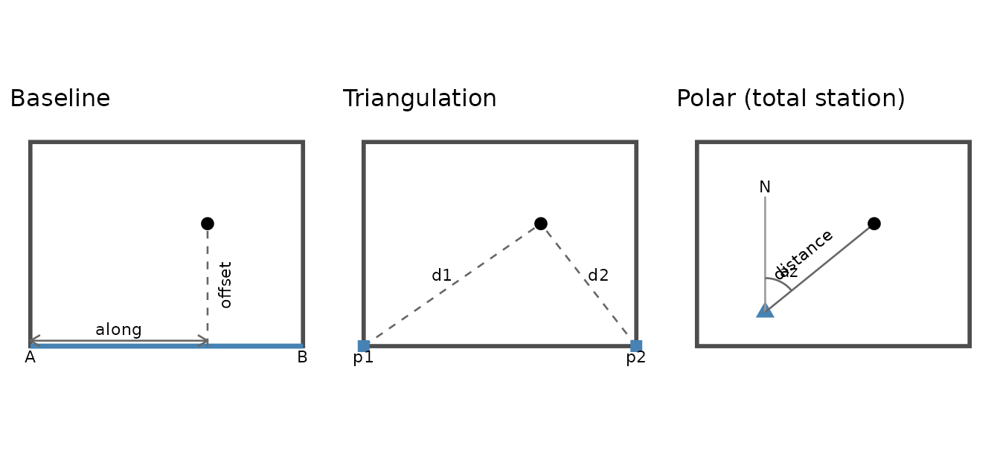
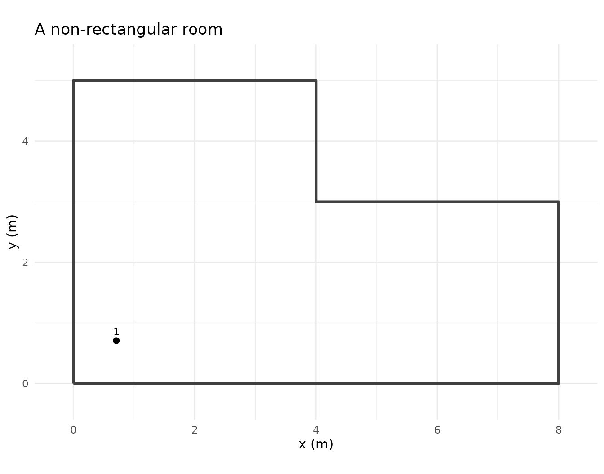
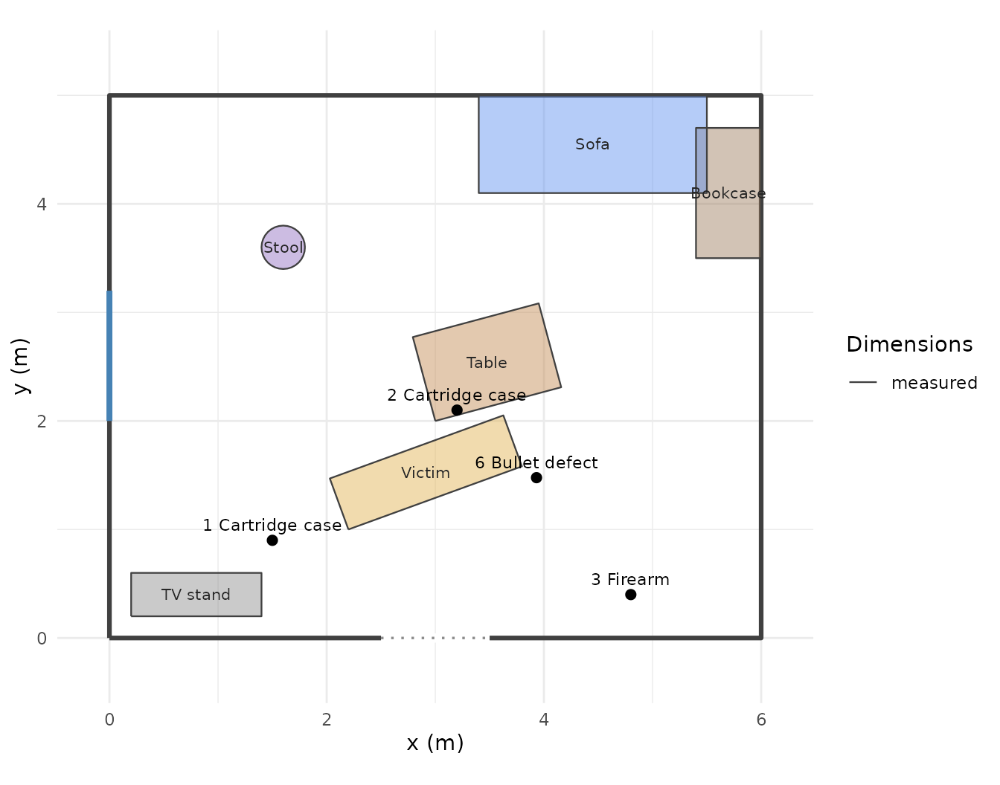
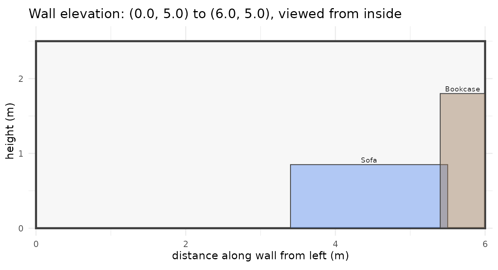
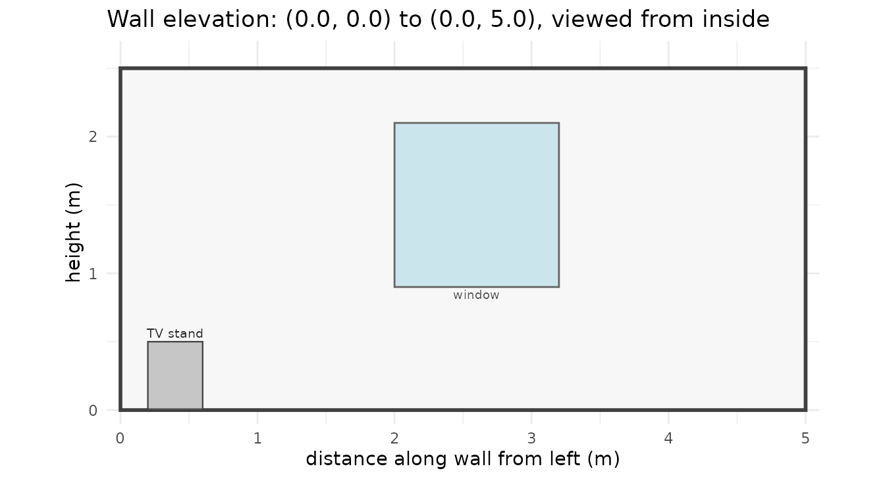

Scene mapping: from tape measurements to a to-scale diagram
Source:vignettes/scene-mapping.Rmd
scene-mapping.RmdThe rough sketch you draw at the scene is the legal record. What forensicR adds is the step after it: converting the numbers on that sketch into one consistent coordinate frame, checking that they agree, and drawing the to-scale plan and elevations from them.
Conventions
-
Units: anything, as long as everything uses the same one. The plots label axes with the
unitsargument. - Frame: x increases to the east, y to the north, z upwards from the floor. Pick a fixed origin, normally a room corner, and write it on the rough sketch.
- Azimuth: degrees clockwise from north. North is 0, east is 90.
- Left and right of a wall always mean as seen standing inside the room facing that wall.
The three measurement methods

Baseline (rectangular coordinates)
Fix a line between two known points, usually two wall corners. For each item record the distance along the line from the origin and the perpendicular offset. Offsets are positive to the left when walking from the origin toward the end point.
coords_baseline(along = c(1.2, 3.5), offset = c(0.8, 2.1),
origin = c(0, 0), end = c(6, 0), id = c("A", "B"))
#> # A tibble: 2 × 6
#> id x y z type method
#> <chr> <dbl> <dbl> <dbl> <chr> <chr>
#> 1 A 1.2 0.8 NA evidence baseline
#> 2 B 3.5 2.1 NA evidence baselineThe baseline does not have to be along an axis. Any two known points work, and the conversion handles the rotation:
coords_baseline(along = 2, offset = 1, origin = c(1, 1), end = c(1, 5))
#> # A tibble: 1 × 6
#> id x y z type method
#> <chr> <dbl> <dbl> <dbl> <chr> <chr>
#> 1 P01 0 3 NA evidence baselineTriangulation
Two distances from two fixed points. Two mirror-image solutions exist; side picks the one to the left or right of the directed line from p1 to p2. If the distances cannot meet you get NA and a warning.
coords_triangulation(d1 = c(3, 4), d2 = c(4, 5), p1 = c(0, 0), p2 = c(5, 0), side = "left")
#> # A tibble: 2 × 6
#> id x y z type method
#> <chr> <dbl> <dbl> <dbl> <chr> <chr>
#> 1 P01 1.8 2.4 NA evidence triangulation
#> 2 P02 1.6 3.67 NA evidence triangulation
coords_triangulation(d1 = 1, d2 = 1, p1 = c(0, 0), p2 = c(5, 0))
#> Warning: 1 item cannot be located: distances do not form a triangle.
#> # A tibble: 1 × 6
#> id x y z type method
#> <chr> <dbl> <dbl> <dbl> <chr> <chr>
#> 1 P01 NA NA NA evidence triangulationPolar
Distance and azimuth from an instrument position, for total stations or compass-and-tape work.
coords_polar(distance = c(3.6, 5.0), azimuth = c(15, 330), station = c(3, -2))
#> # A tibble: 2 × 6
#> id x y z type method
#> <chr> <dbl> <dbl> <dbl> <chr> <chr>
#> 1 P01 3.93 1.48 NA evidence polar
#> 2 P02 0.500 2.33 NA evidence polarChecking measurements against each other
The most useful habit: measure a few points by two methods and compare. Disagreement beyond a few centimetres means a reading or a reference point is wrong.
a <- coords_baseline(along = 2.6, offset = 1.8, end = c(4, 0), id = "X (baseline)")
b <- coords_triangulation(d1 = sqrt(2.6^2 + 1.8^2), d2 = sqrt(1.4^2 + 1.8^2),
p1 = c(0, 0), p2 = c(4, 0), id = "X (triangulation)")
sqrt((a$x - b$x)^2 + (a$y - b$y)^2) # closure error
#> [1] 2.220446e-16Height and type
Every point can carry a height z (a defect in a wall, a stain on a door) and a type: "evidence" (default), "defect" or "bloodstain". The type only changes how the point is drawn.
coords_polar(distance = 3.6, azimuth = 15, station = c(3, -2),
id = "6 Bullet defect", z = 1.35, type = "defect")
#> # A tibble: 1 × 6
#> id x y z type method
#> <chr> <dbl> <dbl> <dbl> <chr> <chr>
#> 1 6 Bullet defect 3.93 1.48 1.35 defect polarWalls, doors, windows
room_rect() is the quick way to get a rectangle. Any room shape can be described directly as polylines with columns x, y, group and type ("wall", "door" or "window"), so an L-shaped room is just a longer polyline.
walls <- rbind(
room_rect(0, 0, 6, 5),
opening(2.5, 0, 3.5, 0, type = "door"),
opening(0, 2.0, 0, 3.2, type = "window")
)
lshape <- tibble::tibble(x = c(0, 8, 8, 4, 4, 0, 0), y = c(0, 0, 3, 3, 5, 5, 0),
group = "room", type = "wall")
plot_scene(coords_polar(1, 45, id = "1"), walls = lshape) + ggtitle("A non-rectangular room")
Furniture
Objects are footprints with heights. Three ways to place them, matching how they are measured:
furn <- rbind(
along_wall(walls, "north", from = 3.4, length = 2.1, depth = 0.9, id = "Sofa", type = "sofa"),
along_wall(walls, "east", from = 0.3, length = 1.2, depth = 0.6, id = "Bookcase", type = "bookcase"),
furniture("Table", "table", x = 3.0, y = 2.0, width = 1.2, depth = 0.8, angle = 15),
furniture_from_corners("TV stand", "tv_stand", p1 = c(0.2, 0.2), p2 = c(1.4, 0.6)),
furniture("Stool", "chair", x = 1.6, y = 3.6, diameter = 0.4, shape = "circle", colour = "#8e6bbf"),
furniture("Victim", "person_lying", x = 2.2, y = 1.0, width = 1.7, depth = 0.5, angle = 20)
)
furniture_table(furn)
#> # A tibble: 6 × 7
#> Object Type Footprint Height `Position (x, y)` Angle Dimensions
#> <chr> <chr> <chr> <chr> <chr> <chr> <chr>
#> 1 Sofa sofa 2.10 x 0.90 0.85 5.50, 5.00 180 measured
#> 2 Bookcase bookcase 1.20 x 0.60 1.80 6.00, 3.50 90 measured
#> 3 Table table 1.20 x 0.80 0.75 3.00, 2.00 15 measured
#> 4 TV stand tv_stand 1.20 x 0.40 0.50 0.20, 0.20 0 measured
#> 5 Stool chair circle, 0.40 … 0.90 1.60, 3.60 0 measured
#> 6 Victim person_lying 1.70 x 0.50 0.30 2.20, 1.00 20 measuredUse measured = FALSE for anything whose size was estimated rather than measured: it is drawn dashed and flagged in the report table. colour and alpha (opacity, default 0.45) are per object; furniture_alpha in any plotting function overrides them all at once.
Plan view
pts <- rbind(
coords_baseline(c(1.5, 3.2, 4.8), c(0.9, 2.1, 0.4), end = c(6, 0),
id = c("1 Cartridge case", "2 Cartridge case", "3 Firearm")),
coords_polar(3.6, 15, station = c(3, -2), id = "6 Bullet defect", z = 1.35, type = "defect")
)
plot_scene(pts, walls = walls, furniture = furn)
The result is a ggplot object, so you can add a title, a north arrow or notes with ordinary ggplot2 code.
Elevations
Each wall face-on, with the heights of what is on or near it. Use wall_from_room() to get a wall of a rectangular room already ordered left-to-right as seen from inside, or pass any segment c(x1, y1, x2, y2).
plot_wall_elevation(wall_from_room(walls, "north"), pts, walls = walls, furniture = furn)
plot_wall_elevation(wall_from_room(walls, "west"), pts, walls = walls, furniture = furn)
Items are selected by their perpendicular distance to the wall (tol, default 0.15) and objects by tol_furniture (default 0.35), so a bookcase standing near a corner appears on both adjacent walls, as it would in the room.
Exporting
Points and footprints are plain data frames. Write them out for a CAD or diagramming package with write.csv():
write.csv(pts, "scene-points.csv", row.names = FALSE)
write.csv(furniture_footprint(furn), "furniture-footprints.csv", row.names = FALSE)